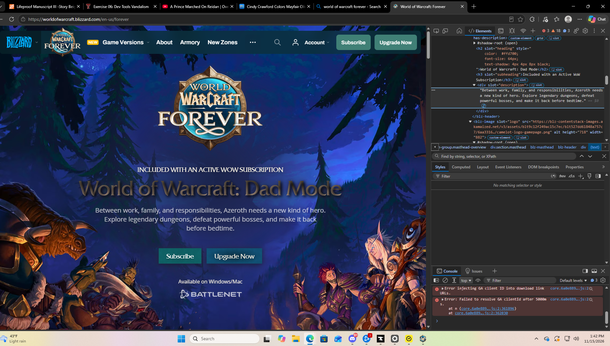

Week 04 · Exercise 01
Dev Tools Vandalism
World of Warcraft: Dad Mode
I used Microsoft Edge's Developer Tools to temporarily edit Blizzard Entertainment's World of Warcraft: Forever webpage. These changes were visible only in my browser and did not change the live website.

What I Changed
I changed the headline from “Carve A New Path” to “World of Warcraft: Dad Mode.” I also replaced the original description with a joke about balancing adventures in Azeroth with work, family, and bedtime.
In the Styles panel, I edited the headline's color, font-size, and text-shadow properties. I experimented with a gold color and larger type to make the new title stand out against the fantasy background.
What I Learned
This exercise helped me see how HTML provides the words on a page while CSS controls their appearance. I also learned how to select an element, inspect its styles, and make temporary changes without modifying the actual website. Some existing styles affected the final appearance of my edits, which showed me why inspecting CSS rules matters.